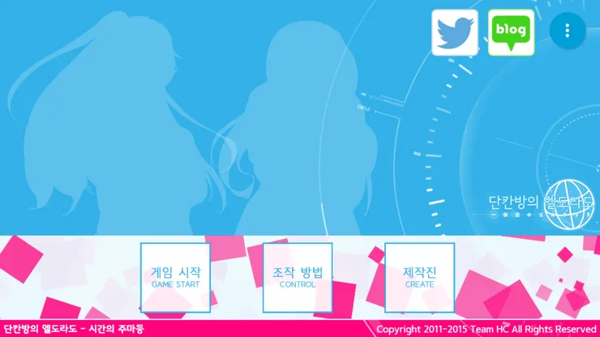
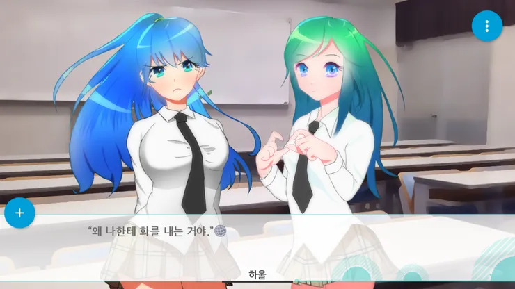
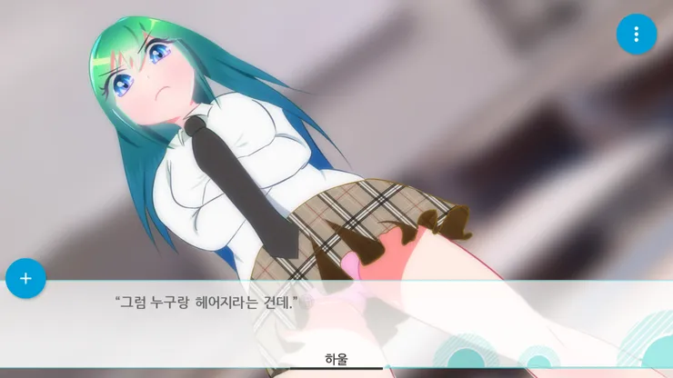
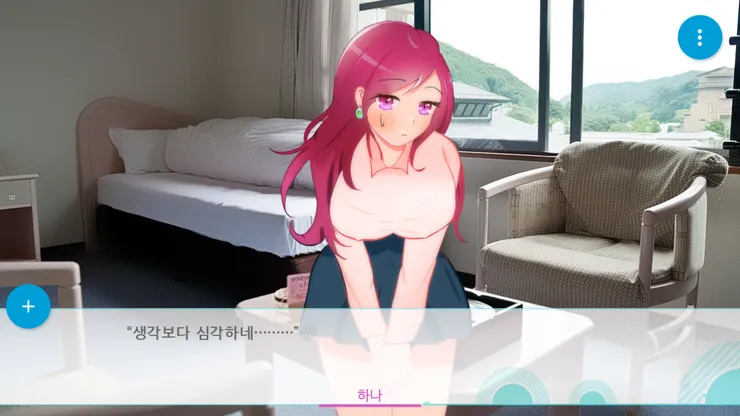
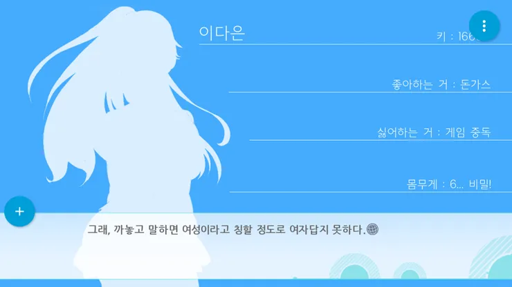

프로젝트 8 · 2015.09.08 발매
비 오는 날 우연히 마주친 그녀.
게임 속에서 다시 만난 인연이 현실을 바꾼다.
집에서 게임만 하던 나의 일상에 나타난 수상한 여자, 설화. 게임 속에서 시작된 인연이 현실에서도 이어진다. 삼각김밥 이벤트, 편의점, 그리고 12만원짜리 세탁비. 평범한 나날 속에 스며든 그녀는 과연 어떤 사람일까.
다은, 그리고 갑자기 나타난 설화가 만들어가는 일상 이야기.

비 오는 날에도 집에서 게임만 하는 게임 중독자. VR 게임 '엘도라도'에 빠져 살며, 삼각김밥 이벤트를 위해 며칠째 삼각김밥만 먹는 괴짜.

싫은 척 하면서도 나의 집에 음식을 가져다주는 츤데레. 게임은 절대 안 한다고 했지만 HMD를 선물받고 영화는 본다.

비 오는 날 우산 흙이 튀었다며 12만원을 요구하는 여자. 게임 속에서 클레릭으로 만렙을 찍어 언니를 PK하려는 야망을 가졌다.

2D 레트로 감성의 VR 게임. 음성 채팅만 지원하고, 여성 유저에게 성희롱을 하는 귀축천민이 있다는 도시전설이 있다.

삼각김밥 인형을 누가 가질지, 뒤따라오는 여자에게 말을 걸지. 소소한 선택들이 쌓여 관계가 변화되는데...
단칸방의 엘도라도는 서비스 종료되었습니다.
설명 내용이 여기에 들어갑니다.